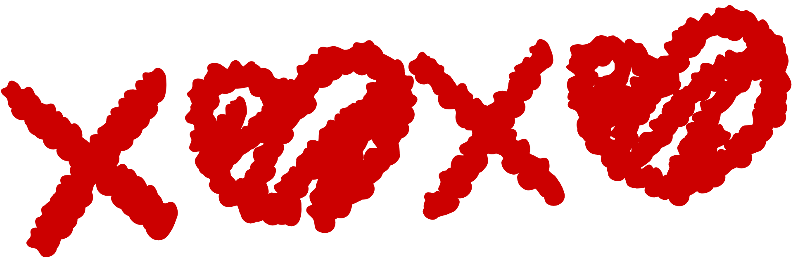
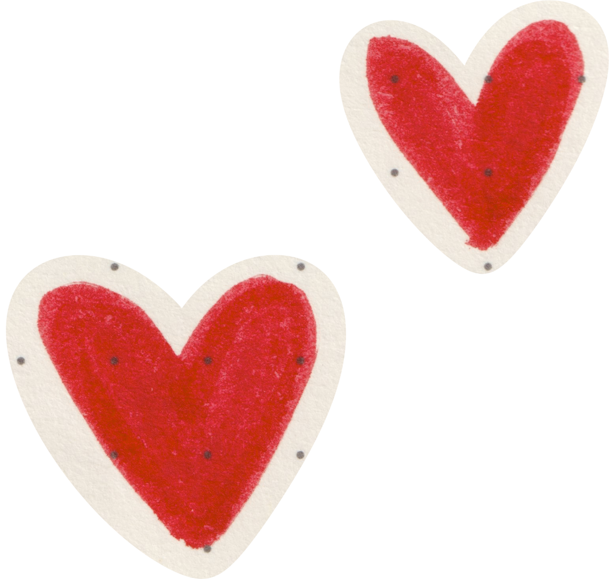

Correio Elegante
A solução romântica criada para os etespianos apaixonados!
Dentro da ETESP, além do clima acadêmico e amigável, o romance vem marcar sua presença por todo o campus.
O Correio Elegante é uma tradição criada e transmitida de geração em geração pelos alunos do curso de Administração. Todos os anos, novas pessoas são escolhidas para os papéis de cupidos, aqueles que ficam responsáveis por espalhar afeto e carinho por todo o ambiente ao longo de um ano letivo entre os etespianos apaixonados. O Correio tem uma importância inegável, já que, ao longo dos anos, por meio dele, vários casais (e ex-casais), dos mais variados tipos, salas e cursos, foram formados em diferentes momentos e espaços dentro do campus. 
O Correio Elegante acontece de forma física, em que os clientes
compram os papéis
coloridos em formato de corações, escrevem neles e contam com a magia dos cupidos para
transformar desconhecidos, conhecidos ou o que seja em casais apaixonados. As datas
são divulgadas com antecedência pelo Instagram (e por alguns outros meios), permitindo
que todos os etespianos planejem suas melhores cantadas e também sua vida financeira. 
OBS: É fundamental agir com atitude e bom senso ao enviar um Correio, já
que
os cupidos até deixam passar cantadas enfadonhas, mas nunca ofensas ou comentários
desnecessários.
AQUELES QUE COMETEREM QUALQUER TIPO DE DESRESPEITO ESTÃO SUJEITOS ÀS DEVIDAS PUNIÇÕES.
Além disso, fiquem sempre atentos ao perfil oficial do Correio Elegante no Instagram:
lá serão divulgados os horários, os dias e sugestões de cantadas para aqueles que estão
sem criatividade.